DIAGNOSTICAR.
RECUPERAR.
Diagnóstico y resolución de incidencias en MySQL
Identificar el síntoma, reunir evidencias, localizar la causa y recuperar el servicio.
Punto de partida
Se utiliza el servidor de la actividad 2 con MySQL, Apache y phpMyAdmin, la base practicas_asgbd y el usuario asgbd. Las pruebas se realizarán únicamente en la máquina virtual de prácticas. La práctica se ha completado paso a paso. El alumno confirma la realización de las trece capturas. Las imágenes se cargan desde la carpeta media con sus nombres acordados.
Método
Síntoma → estado del servicio → mensaje de error → configuración y registros → una corrección → comprobación final.
Estado inicial de MySQL y Apache
Comprobar ambos servicios antes de provocar incidencias.
systemctl is-active mysql
systemctl is-active apache2
mysql --version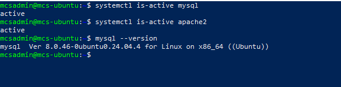
media/u1-a03-01-estado-inicial.PNGResultado de la práctica: El alumno confirma la comprobación inicial de MySQL y Apache antes de comenzar las incidencias.
MySQL detenido: diagnóstico
Detener MySQL deliberadamente y comprobar que el cliente ya no puede conectar. Introducir la contraseña cuando la solicite, sin incluirla en el comando.
sudo systemctl stop mysql
systemctl is-active mysql
mysql -u asgbd -p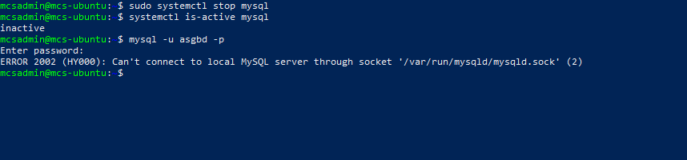
media/u1-a03-02-mysql-detenido.PNGResultado de la práctica: Se detuvo MySQL de forma deliberada y se comprobó el fallo de conexión del cliente.
Recuperación de MySQL
Iniciar el servicio, comprobar su estado y probar la respuesta del servidor.
sudo systemctl start mysql
systemctl is-active mysql
mysqladmin -u asgbd -p ping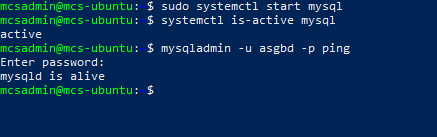
media/u1-a03-03-mysql-recuperado.PNGResultado de la práctica: Se inició MySQL y se comprobó su recuperación con el estado del servicio y mysqladmin ping.
Mensajes de systemd
Consultar los registros del servicio y localizar la parada y el arranque. Probar el seguimiento en directo y salir con Ctrl+C antes de continuar.
journalctl -u mysql -n 50 --no-pager
journalctl -u mysql --since "10 minutes ago" --no-pager
sudo journalctl -u mysql -f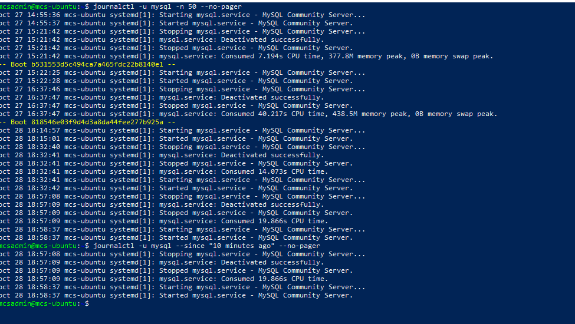
media/u1-a03-04-journalctl.PNGResultado de la práctica: Se consultaron los mensajes de systemd mediante journalctl y se probó el seguimiento en directo.
Registro de errores de MySQL
Comprobar si error.log existe y leer sus últimas líneas. Si no está disponible, documentar la ausencia y utilizar journalctl. Para salir del seguimiento, pulsar Ctrl+C.
sudo ls -l /var/log/mysql/
sudo tail -n 50 /var/log/mysql/error.log
sudo tail -f /var/log/mysql/error.log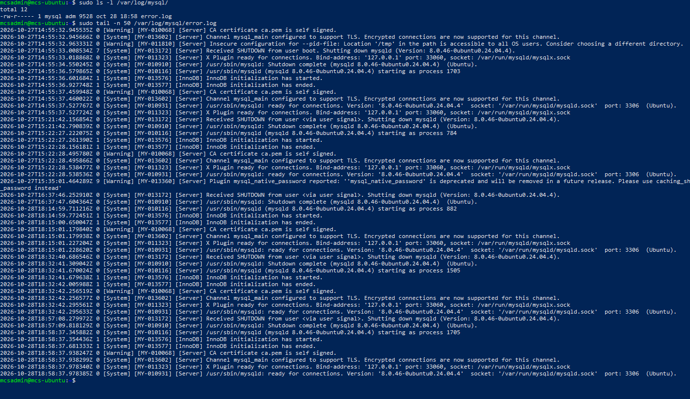
media/u1-a03-05-error-log.PNGResultado de la práctica: Se revisó el directorio de registros y el archivo error.log; el seguimiento se cerró con Ctrl+C.
Puertos y conexión TCP
Comprobar los puertos 3306 y 80 y el puerto configurado en MySQL. Probar una conexión TCP; dentro del cliente consultar SELECT VERSION(); y salir con EXIT;.
sudo ss -ltnp | grep -E ":(3306|80)[[:space:]]"
sudo mysql -e "SHOW VARIABLES LIKE 'port';"
mysql -u asgbd -p -h 127.0.0.1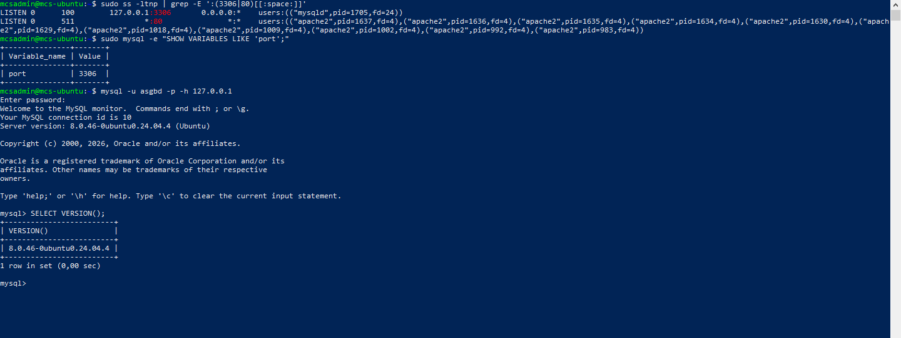
media/u1-a03-06-puertos-conexion.PNGResultado de la práctica: Se comprobaron los puertos de MySQL y Apache y la conexión TCP al servidor.
Contraseña incorrecta
Usar una contraseña deliberadamente incorrecta para observar Access denied. Repetir con la contraseña válida y ejecutar SELECT USER(), VERSION(); y EXIT;. No reiniciar el servidor. Si falla con la clave correcta, revisar la cuenta y sus permisos antes de cambiar nada.
mysql -u asgbd -p
# Repetir con la contraseña correcta:
mysql -u asgbd -p
# Dentro de MySQL:
SELECT USER(), VERSION();
EXIT;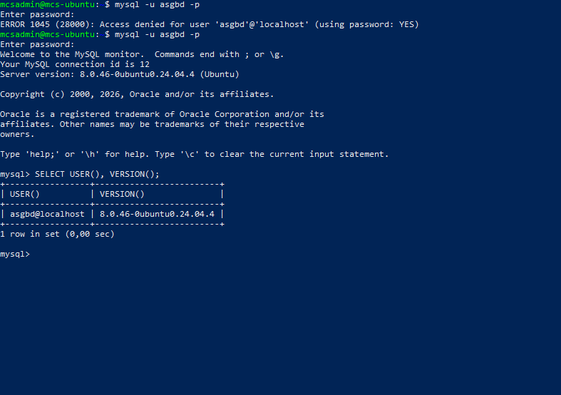
media/u1-a03-07-autenticacion.PNGResultado de la práctica: Se probó una contraseña incorrecta y después el acceso con la correcta, sin reiniciar MySQL.
Apache detenido
Detener Apache, intentar abrir phpMyAdmin en Windows y contrastar el fallo con curl y el estado del servicio. Comprobar que MySQL sigue activo.
sudo systemctl stop apache2
curl -I http://localhost/phpmyadmin/
systemctl status apache2 --no-pager
systemctl is-active mysql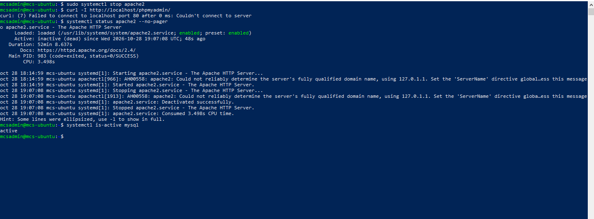
media/u1-a03-08-apache-detenido.PNGResultado de la práctica: La salida aportada muestra curl: (7) Failed to connect to localhost port 80, Apache inactive (dead) y MySQL active. La causa era Apache detenido; MySQL seguía disponible.
Recuperación del acceso web
Iniciar Apache, comprobar su respuesta y volver a abrir phpMyAdmin desde Windows. Si hace falta una imagen complementaria para el navegador, se decidirá al llegar a este paso.
sudo systemctl start apache2
systemctl is-active apache2
curl -I http://localhost/phpmyadmin/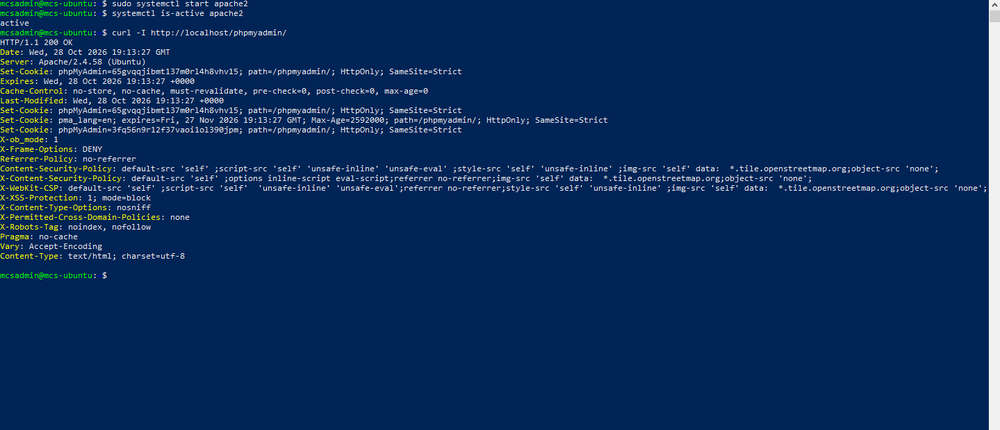
media/u1-a03-09-apache-recuperado.PNGResultado de la práctica: Se inició Apache, se comprobó su estado y la respuesta HTTP de phpMyAdmin; el alumno continuó tras recuperar el acceso.
Incidencia controlada de configuración
Crear primero una copia nueva que conserve los cambios de la actividad 2. Añadir parametro_inexistente = 1 dentro de [mysqld]. El reinicio posterior se realizará en el siguiente paso, de forma guiada.
sudo cp -n /etc/mysql/mysql.conf.d/mysqld.cnf /etc/mysql/mysql.conf.d/mysqld.cnf.antes_incidencia
ls -l /etc/mysql/mysql.conf.d/mysqld.cnf.antes_incidencia
sudo nano /etc/mysql/mysql.conf.d/mysqld.cnf
# Añadir dentro de [mysqld]:
parametro_inexistente = 1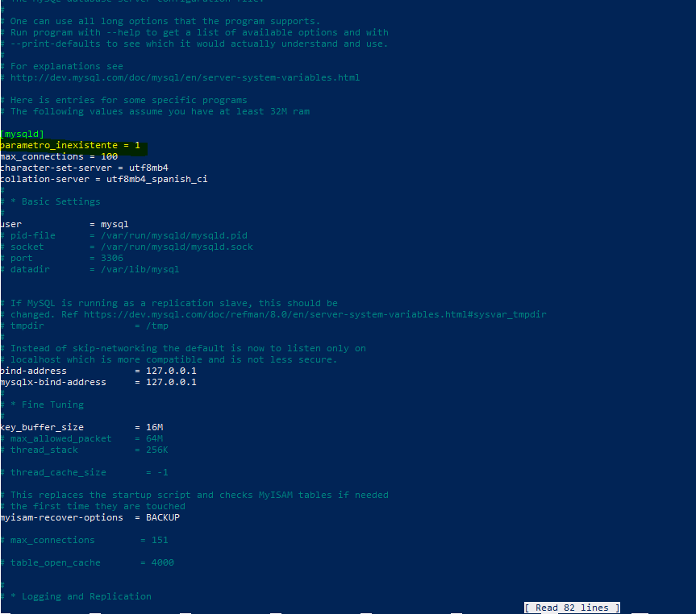
media/u1-a03-10-parametro-invalido.PNGResultado de la práctica: Se creó la copia de la configuración y se añadió deliberadamente parametro_inexistente = 1 dentro de [mysqld].
Identificar el parámetro incorrecto
Intentar reiniciar y observar el fallo esperado. Buscar el mensaje que nombre parametro_inexistente, unknown variable o unknown option. No aplicar otras modificaciones.
sudo systemctl restart mysql
systemctl status mysql --no-pager
journalctl -u mysql -n 50 --no-pager
sudo tail -n 50 /var/log/mysql/error.log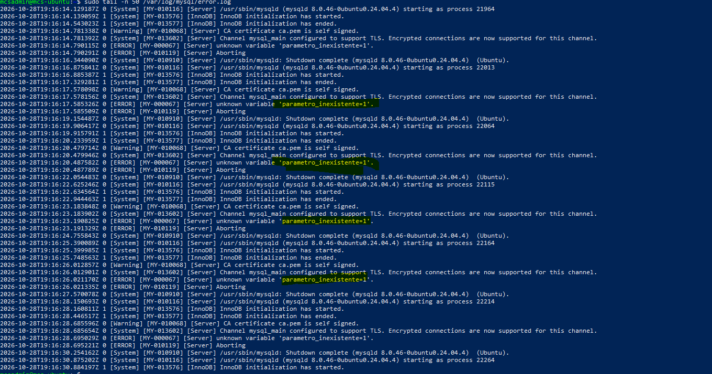
media/u1-a03-11-diagnostico-configuracion.PNGResultado de la práctica: Se intentó reiniciar con el parámetro inválido y se consultaron el estado y los registros para localizar la causa. La captura documenta el mensaje real obtenido.
Corrección y validación
Eliminar únicamente la línea parametro_inexistente = 1. Guardar, validar y comprobar que el código de salida es 0. Solo entonces reiniciar y verificar.
sudo nano /etc/mysql/mysql.conf.d/mysqld.cnf
sudo mysqld --validate-config
echo $?
# Solo tras validación correcta:
sudo systemctl restart mysql
systemctl is-active mysql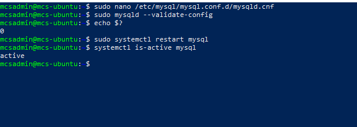
media/u1-a03-12-correccion.PNGResultado de la práctica: Se eliminó el parámetro incorrecto, se validó la configuración y se reinició MySQL. El alumno confirmó la finalización de este paso.
Comprobaciones finales
Ambos servicios deben estar activos, MySQL debe responder y phpMyAdmin debe funcionar. Los valores de configuración de la actividad 2 deben conservarse.
systemctl is-active mysql
systemctl is-active apache2
mysqladmin -u asgbd -p ping
curl -I http://localhost/phpmyadmin/
sudo mysql -e "SHOW VARIABLES WHERE Variable_name IN ('max_connections','character_set_server','collation_server');"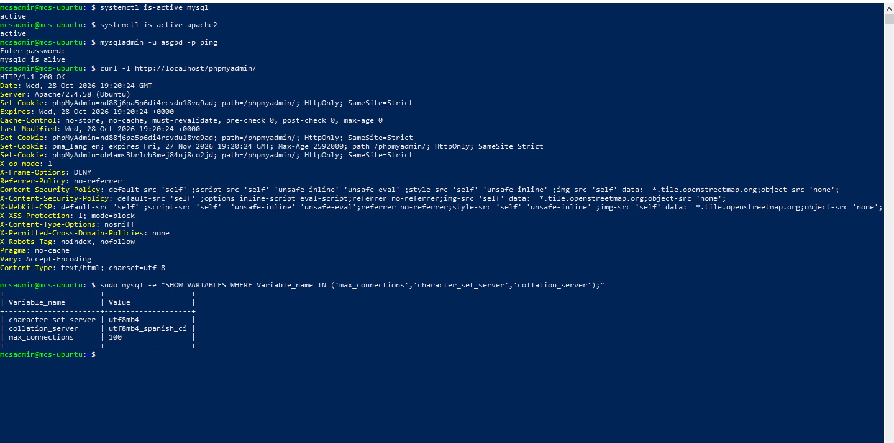
media/u1-a03-13-estado-final.PNGResultado de la práctica: El alumno confirma la comprobación final de ambos servicios, la respuesta de MySQL y phpMyAdmin y la conservación de los valores 100, utf8mb4 y utf8mb4_spanish_ci.
Informe de incidencias
Resumen de las cuatro incidencias realizadas y de su recuperación.
| Incidencia | Síntoma y mensaje | Causa y corrección | Comprobación final |
|---|---|---|---|
| MySQL detenido | Servicio inactive y fallo de conexión. | Parada deliberada del servicio. Corrección: systemctl start mysql. | Estado activo y respuesta de mysqladmin ping. |
| Contraseña incorrecta | Acceso rechazado por autenticación. | Contraseña introducida incorrectamente. Repetir el acceso con la correcta; no reiniciar. | Sesión SQL y consulta de usuario y versión. |
| Apache detenido | curl no conecta al puerto 80; Apache inactive (dead), MySQL active. | Servidor web detenido. Corrección: systemctl start apache2. | Apache activo y respuesta web recuperada. |
| Parámetro no válido | Fallo al reiniciar MySQL tras añadir el parámetro incorrecto. | parametro_inexistente = 1 no es válido. Eliminar esa línea y validar antes de reiniciar. | MySQL recuperado y configuración de la actividad 2 conservada. |
Recuperación alternativa
Solo si no se consigue corregir el parámetro: restaurar la copia de esta actividad, que conserva la configuración de la actividad 2. No restaurar la copia anterior a esos cambios.
sudo cp /etc/mysql/mysql.conf.d/mysqld.cnf.antes_incidencia /etc/mysql/mysql.conf.d/mysqld.cnf
sudo mysqld --validate-config
# Si valida correctamente:
sudo systemctl restart mysql
systemctl status mysql --no-pagerEXAM MODE
| Concepto | Interpretación |
|---|---|
| active / inactive / failed | Servicio funcionando / detenido / inicio fallido. Consultar el estado antes de cambiar la configuración. |
| Access denied | El servidor responde, pero rechaza las credenciales o los permisos. Un error de contraseña no exige reiniciar. |
| Connection refused | No hay un servidor aceptando conexiones en la dirección y puerto probados. Contrastar servicio, dirección y puerto. |
| MySQL y Apache | MySQL puede funcionar aunque Apache esté detenido. phpMyAdmin necesita el servidor web y su conexión al gestor. |
| journalctl y error.log | El primero reúne mensajes de systemd; el segundo puede aportar el error específico de MySQL. |
| HTTP 200 / 301–302 / 404 | Respuesta correcta / redirección / ruta no encontrada. HTTP 200 por sí solo no acredita una sesión SQL válida. |
| Puerto y socket | La ausencia de escucha en 3306 no prueba por sí sola que MySQL esté averiado: puede usar otro puerto o socket local. |
| Validación | mysqld --validate-config comprueba la configuración. echo $? debe ejecutarse justo después para consultar su código de salida. |
| Corrección controlada | Cambiar una sola causa y comprobar el efecto. No cambiar contraseñas ni plugins de autenticación sin evidencias que lo justifiquen. |
Resultado final
La actividad se ha completado. El alumno confirma que MySQL y Apache están activos, MySQL responde, phpMyAdmin vuelve a estar disponible y se conservan los valores de configuración de la actividad 2. Los comandos de recuperación alternativa se incluyen como contingencia; no fue necesario restaurar la copia durante el recorrido comunicado.